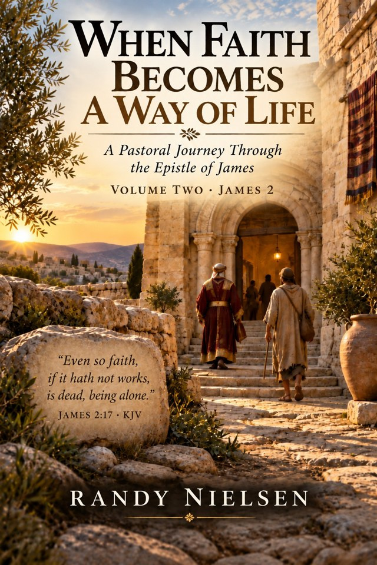
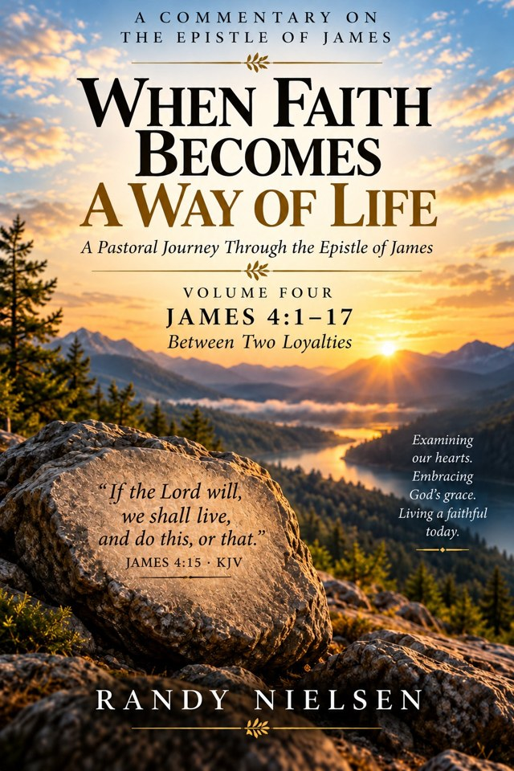
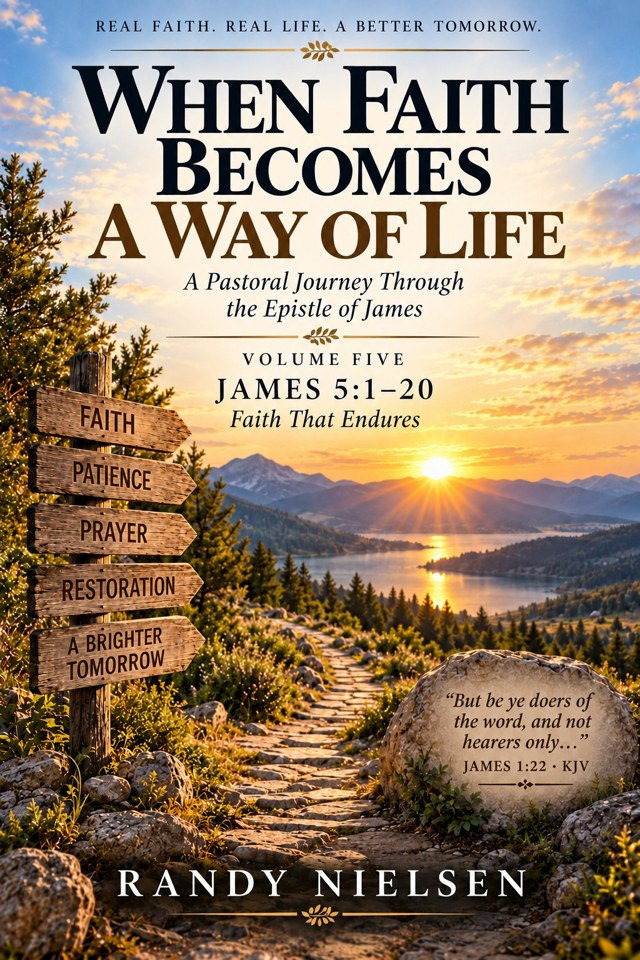

When Faith Becomes a Way of Life
A pastoral journey through the Epistle of James, exploring the relationship between living faith and everyday discipleship.
Available now · 5 free PDFsSerious about Scripture. Rooted in Faith. Written for the Journey.
Thoughtful biblical commentary for readers seeking to understand Scripture more deeply and live faithfully in its light.
Each series brings biblical study together with pastoral reflection, careful exposition, and questions for personal consideration.
A pastoral journey through the Epistle of James, exploring the relationship between living faith and everyday discipleship.
Available now · 5 free PDFsA pastoral journey through Revelation, centered on Christ, the perseverance of the Church, and the hope of God's promised renewal.
15 volumes · KJV revision underwayA forthcoming pastoral journey through Hebrews, considering the sufficiency of Christ and the invitation to draw near in faith.
Volumes 1, 5, and 6 complete · Series in progressA Pastoral Journey Through the Epistle of James
By Randy Nielsen · Complete in five volumes
Download any volume free of charge. These studies bring Scripture, pastoral reflection, and practical application together for your journey of faith. Scripture quotations use the King James Version (KJV).
Discover how perseverance, prayer, and obedience shape a life of faith. James calls us to receive God’s Word and put it into practice.
Download Volume 1 — Free PDFPDF · 1.4 MB
Explore the call to reject favoritism, extend mercy, and demonstrate living faith through compassionate action.
Download Volume 2 — Free PDFPDF · 1.4 MBConsider the power of our words and the wisdom from above that nurtures gentleness, mercy, and peace.
Download Volume 3 — Free PDFPDF · 1.0 MB
Examine the desires behind conflict, the invitation to draw near to God, and the humility of entrusting tomorrow to Him.
Download Volume 4 — Free PDFPDF · 0.9 MB
Reflect on justice, patient endurance, earnest prayer, and the restoring love that sustains a community of faith.
Download Volume 5 — Free PDFPDF · 0.9 MBNielsen–Atlas Publishing is an independent Christian publishing ministry devoted to making substantial, accessible pastoral commentary available at little or no cost. We believe careful engagement with Scripture should encourage understanding, nurture faithful living, and remain within reach of readers regardless of their circumstances.
All five James volumes are available above as free PDF downloads. Kindle and paperback editions of Volumes 1–3 have been submitted to Amazon and are in review. Volumes 4–5 will follow; purchase links will be added as the listings become available.
The Revelation series is being updated to King James Version Scripture quotations for release. Hebrews is in progress, with Volumes 1, 5, and 6 completed.